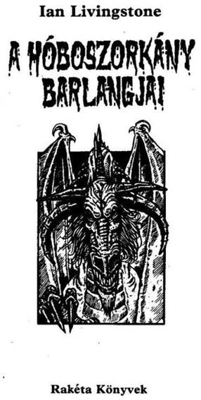
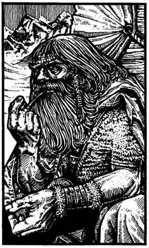

A mű eredeti címe
Caverns of the Snow Witch
Gary Ward és Edward Crosby illusztrációival
Fordította
Varsányi Mária
© Ian Livingstone, 1984
Illustrations copyright © Gary Ward
and Edward Crosby, 1984
Hungarian translation Varsányi Mária, 1990

Háttértörténet
A tél Észak-Allansiában mindig kegyetlen és keserves. Gyakran havazik, jeges szél fúj, a fagy csontig hatol. Néhány hete egy Big Jim Sun nevezetű kereskedő azzal fogadott fel, hogy biztosíts védelmet karavánja számára az északi kolóniához vezető hosszú úton. Lóvonta szánjait ruhával, szerszámokkal, fegyverekkel, sózott hússal, fűszerekkel és teával pakolta meg, amit prémekre és mamutagyarból készült csontfaragványokra akar majd elcserélni. Big Jim odafelé sose szokott aggódni, mivel a banditák általában csak visszafelé támadják meg a karavánokat - nem ő az egyetlen, aki felismerte az északi áruk értékét.
Hat szán élén haladsz, amikor épp egy befagyott tavon kellene átkelnetek. A távolban a Jégtű-hegyek felhőből kibukkanó hósapkás csúcsai merednek az ég felé. A célotok a hegy lába, ahol az északiak a vásárokat szokták tartani. Enyhén havazik. Megállsz, a kardoddal megdöfködöd a jeget, hogy megtudd, vajon kibírja-e a szánok súlyát, amikor hirtelen egy vadászkürt fülsiketítő hangja töri meg a csendet. Felállsz és visszarohansz a karavánhoz, hogy beszélj Big Jimmel. A második szán bakján ül, a hajtó mellett, és hosszú szárú pipát szív. Hatalmas ember, nagy, bozontos szakállal - igazán tiszteletet parancsoló jelenség. Kék szemével a látóhatárt fürkészi, az élet jelei után kutatva. - Úgy hangzik, mintha a kolónia felől jönne - mondja mély hangon. - Jó lenne, ha elmennél és kiderítenéd, mi történt. Lehet, hogy baj van. Aztán siess vissza.
Elindulsz a Jégtű-hegy lábánál fekvő kolónia felé. Két óra múltán szörnyű mészárlás színhelyére érsz. A hó piroslik a vértől, a fakunyhók szétzúzva, lerombolva. Hat ember holtan fekszik a hóban, testüket szétszabdalták, csatabárdjaik mellettük hevernek. A lábnyomokból ítélve egy óriási méretű lény támadhatta meg őket. A halványuló napvilágnál elmeséled a kolóniával történt szörnyűségeket. Big Jim körbeállítja a szánokat, hogy éjszakára védelmet nyújtsanak az embereinek. A kör közepén tüzet raktok, Big Jimmel együtt te is mellé telepszel. Mindenki izgatott, még őrt is állíttok. Big Jim halkan megkérdi tőled, hogy hajlandó vagy-e elpusztítani a szörnyű teremtményt, mert máskülönben az ő üzletének örökre vége. Mosolyogva azt válaszolod, hogy megölöd a vadállatot, de csak ha 50 arany üti érte a markodat. Big Jimnek leesik az álla az összeg hallatán, és csak hosszas alkudozások után hajlandó elfogadni követelésedet. A havazás végül eláll; mikor nyugovóra térsz, gondolataid a közelgő vadászat körül forognak.
Mikor reggel felébredsz, a tűzből már csak pislákoló parázs maradt. Gyér füst száll fel a hajnali ködben. Egyetlen hang sem töri meg a reggeli csöndet. Odasétálsz az alvó Big Jimhez, és megérinted a vállát. Felriad. Közlöd vele, hogy indulsz, és reméled, még ma visszaérsz. Intesz az őrnek, és az újra eleredő havazásban a kolónia felé veszed az utadat.